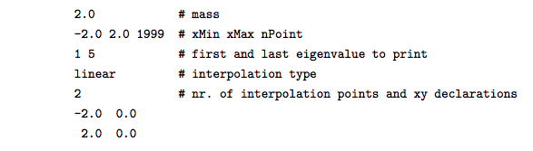

Welcome to Schrödinger Equation Solver in 1D’s documentation!¶
Guide¶
The program consists of 6 python scripts. To solve the Schroedinger Equation for a certain potential the file main.py has to be executed. The necessary information to specify the problem has to be stored stored in a file named schrodinger.inp as shown in the following example:
Please make sure you defined the potential at the bounds of the interval.
- The program will solve the Schroedinger Equation for the specified problem and save the results in 4 files:
- potential.dat: contains the interpolated x and y values of the potential
- wavefuncs.dat: contains the x and y values of the eigenstates of the particle
- energies.dat: contains the eigenvalues corresponding to the eigenstates
- expvalues.dat: contains the expected values of the locations and the uncertainties of the particle
- When executing main.py you are given the choice to change the default settings. These include:
- The name of the input file (default: “./schrodinger.inp”)
- The directory the results will be saved in and plotted from (default: “./”)
However the default settings dont have to be changed (given that schrodinger.inp is in the default directory).
- Aside from the main.py script there is another executable script called plot.py which plots the calculated results from a certain input directory. It will generate 2 diagrams:
- The left one contains the interpolated potential, the eigenstates (shifted on the y-axis by the eigenvalues) and the expected values of the location of the particle.
- The right diagram contains the uncertainty in postition of the particle.
- When executing plot.py you are given the choice to change the default settings. These include:
- The directory of the .dat files you want to plot (default: “./”)
- A scaling factor to scale the wave function in the plot by (default: 1.0)
- An option to change the axis range of the plot (for example: -10,10,-10,10)
The files test_potential*.py in the main directory are only for testing. The necessary reference data is loaded from the folders test_potentials/test_results*_reference/.